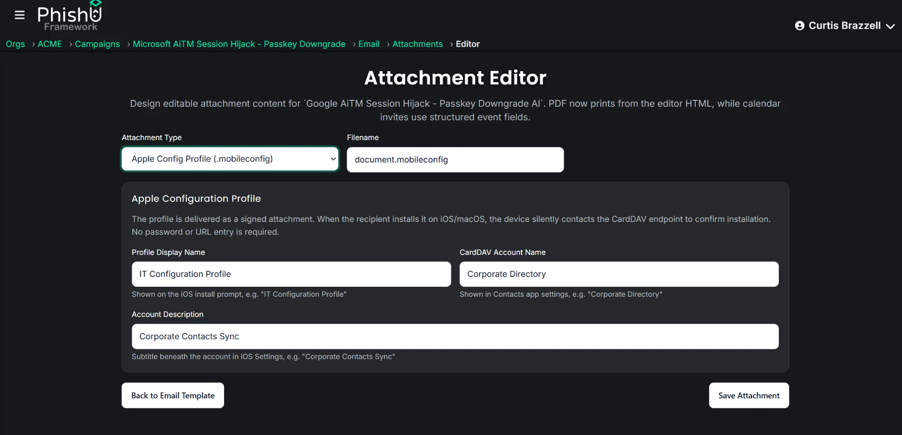

Every phishing technique the PhishU Framework has shipped so far needed the recipient to do something inside a browser: click a link, open a preview, scan a code. Apple Configuration Profiles skip that step entirely. A .mobileconfig file asks for two taps and a device passcode, and the callback to our infrastructure fires from the operating system itself, before Safari or Mail ever opens a connection.
We shipped it on September 12, 2026, as a new email attachment type. Here is what is actually inside the file, and why iOS trusts it enough to make that happen.
Not a document, an instruction
A .mobileconfig file is a signed XML payload, the same format IT departments use to push Wi-Fi settings, VPN configuration, and mail accounts through mobile device management. iOS treats it that way from the first tap. Open the attachment and the device does not render a preview the way it would for a PDF. It walks straight into Settings and asks for a passcode, the identical prompt used for a real corporate enrollment.
That prompt is doing real work for us. Nothing about a passcode screen looks like a phishing page, and the target has just been asked for the one piece of proof that this is a serious, device-level request rather than an email attachment.
The payload is a fake contact sync
The profile we build declares a CardDAV account, the protocol iOS and macOS use to keep contacts synced with a server. Point CardDAVHostName at a landing page domain we control, and the moment the profile installs, the device opens a PROPFIND request trying to sync a contact directory that does not exist.
That request is the entire attack. There is no fake login page waiting behind it and no real directory being synced. We only needed the device to ask, because the field carrying the request is where the tracking lives.
| Plist field | What it actually carries |
|---|---|
CardDAVHostName |
The landing page domain for this campaign |
CardDAVUsername |
Base64-encoded recipient and campaign identifiers, not a real account name |
CardDAVPrincipalURL |
A fixed path our landing page infrastructure listens on |
| Two random UUIDs | Required by the profile format, regenerated for every recipient so no two files match |
iOS puts CardDAVUsername straight into the HTTP Basic auth header of the sync request it fires on install. Our endpoint decodes it, logs the install against the exact campaign send, and returns a 207 Multi-Status response so the device considers the sync finished and stops retrying. No password is checked, because there is nothing behind the account to check against. It was never real.
What we are not doing: this is not credential harvesting. Nobody types a password, and the CardDAV account we point the device at does not exist. The entire signal is "a device installed this profile and synced," which is why an install shows up in reporting next to attachments opened and QR codes scanned, not next to captured credentials.
Why this lands on personal phones specifically
A device already enrolled in a company's MDM can be locked down against exactly this. The restriction is called allowUIConfigurationProfileInstallation, and when it is set to false, a user cannot install a new profile at all, no matter what the file claims to be.
A personal phone used to read work email has no such setting. There is no MDM in the loop to say no. Anyone can tap Install on their own device, which makes this squarely a BYOD problem, and BYOD is where a meaningful share of real corporate email actually gets opened.
Would your MDM policy actually block this on a phone that was never enrolled in it?
Prior art
Weaponized configuration profiles are not a new idea. NetSPI documented using malicious .mobileconfig files to intercept traffic and harvest Exchange credentials in a pentest context over a decade ago, and more recent writeups have covered live phishing campaigns abusing .mobileconfig files specifically for contact, calendar, and email account takeover, including a public breakdown of one such campaign.
What we built is the repeatable version of that idea for an authorized engagement: a unique plist generated per recipient at send time, an install event tied to that exact campaign send, and training that follows automatically. Same category of attack security researchers have been describing for years, wired into reporting and awareness training instead of a one-off proof of concept.
How it ships
The attachment editor gained a third mode alongside the existing PDF, Word, HTML, calendar, and SVG options. Set a profile display name, an account name, and a description, and the Framework generates a fresh plist for every recipient at send time, with its own pair of UUIDs so no two files are byte-identical. Nothing about the setup requires touching the plist by hand.

An install shows up in the campaign dashboard as Config Profile Installs, the AI-generated report calls the technique out by name whenever it was used, and any recipient who installed the profile gets a training slide built specifically for them. It renders the actual iOS install screen, states the org-wide install count for that campaign, and tells that recipient plainly whether their device was one of the ones that synced.
What defenders should take away
- Lock down user-initiated installs on managed devices.
allowUIConfigurationProfileInstallation=falsecloses this off entirely on anything already enrolled in your MDM. - BYOD needs a separate answer. The MDM restriction above does nothing for a personal phone reading corporate mail, and that is where this technique is actually aimed.
- Treat an unsolicited .mobileconfig attachment like an executable, not a document. No legitimate IT team emails a configuration profile as an attachment from outside your normal enrollment flow.
- Check Settings, General, VPN and Device Management periodically. An unfamiliar profile listed there is worth removing and reporting on its own, whether or not anyone remembers installing it.
- Test it rather than assume your policy already covers it. The only way to know whether a real employee taps through a passcode prompt for an unsolicited profile is to run it against your own people under an authorized engagement.
None of this required stealing a password. A tapped Install button on a device that was never supposed to trust us is a real, loggable signal on its own, and it is one more thing worth finding out about your organization before someone else does.
See whether your BYOD devices would install a profile like this
PhishU helps security teams, red teams, pentest firms, and MSSPs run realistic authorized phishing assessments, with reporting and training tied to what each recipient's device actually did. Test Apple Configuration Profile phishing against your own defenses.
Contact Us